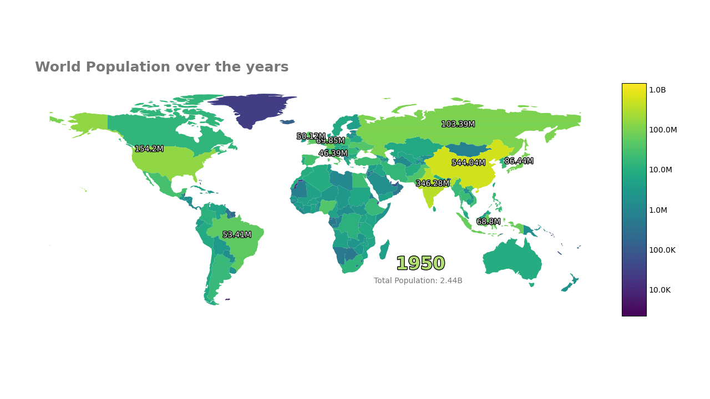

Creating an Animated Choropleth
The data
For the map data we will be using Natural Earth — Admin 0 – Countries. Click the download countries and grab the ne_110m_admin_0_countries. For the population data we will be using ourworldindata population data, grab the full data with around 19k rows.
Some of the displayed tables are shortened for easier understanding, you will get a larger table trying to replicate this.
Converting long data to wide data
| # | Entity | Code | Year | Population |
|---|---|---|---|---|
| 0 | Afghanistan | AFG | 1950 | 7,776,180 |
| 1 | Afghanistan | AFG | 1951 | 7,879,343 |
| 2 | Afghanistan | AFG | 1952 | 7,987,784 |
| 3 | Afghanistan | AFG | 1953 | 8,096,703 |
| 4 | Afghanistan | AFG | 1954 | 8,207,954 |
We will be joining both the population and map data on the Country ISO_A3 code column, so better to remove any nan code(ISO_A3) before hand.
Now for the important part, unlike the rest of the library, time variable here is kept as individual columns and not as a
single column/index. This design choice was chosen so it is easier to work with geopandas as geopandas requires all geometries in a column to work.
In a nutshell previously we had.
For choropleth we have the following wide-data format.
So we will pivot it like this:df = df.pivot(index=['Entity','Code'], columns='Year', values='all years').reset_index()
df.head()
df.to_csv("pivot_population.csv",index=False)
| # | Entity | Code | 1950 | 1951 | 1952 | 1953 | 1954 | 1955 | 1956 | 1957 |
|---|---|---|---|---|---|---|---|---|---|---|
| 0 | Afghanistan | AFG | 7,776,180 | 7,879,343 | 7,987,784 | 8,096,703 | 8,207,954 | 8,326,981 | 8,454,303 | 8,588,340 |
| 1 | Africa | OWID_AFR | 227,776,838 | 232,557,370 | 237,539,910 | 242,685,417 | 248,006,203 | 253,538,234 | 259,271,764 | 265,129,059 |
| 2 | Africa (UN) | UN_AFR | 227,776,420 | 232,556,973 | 237,539,543 | 242,685,066 | 248,005,819 | 253,537,849 | 259,271,438 | 265,128,663 |
| 3 | Albania | ALB | 1,247,854 | 1,276,365 | 1,308,368 | 1,343,581 | 1,381,088 | 1,418,855 | 1,456,823 | 1,497,954 |
| 4 | Algeria | DZA | 9,018,423 | 9,269,870 | 9,521,212 | 9,772,644 | 10,014,393 | 10,247,429 | 10,482,183 | 10,717,503 |
Which gives us 254 regions over 74 years, as you can see not all regions here are countries.
Reading the shp file
We will be using geopandas for all the 'maplysis' stuff.
| # | featurecla | scalerank | LABELRANK | SOVEREIGNT | SOV_A3 | ADM0_DIF | LEVEL | TYPE | TLC | ADMIN | geometry |
|---|---|---|---|---|---|---|---|---|---|---|---|
| 0 | Admin-0 country | 1 | 6 | Fiji | FJI | 0 | 2 | Sovereign country | 1 | Fiji | MULTIPOLYGON (((180 -16.067, 180 -16.555, 179.... |
| 1 | Admin-0 country | 1 | 3 | United Republic of Tanzania | TZA | 0 | 2 | Sovereign country | 1 | United Republic of Tanzania | POLYGON ((33.904 -0.95, 34.073 -1.0598, 37.699... |
We only care about the Geometry for plotting and ISO_A3 for joining.
| # | ISO_A3 | geometry |
|---|---|---|
| 0 | FJI | MULTIPOLYGON (((180 -16.067, 180 -16.555, 179.... |
| 1 | TZA | POLYGON ((33.904 -0.95, 34.073 -1.0598, 37.699... |
| 2 | ESH | POLYGON ((-8.6656 27.656, -8.6651 27.589, -8.6... |
| 3 | CAN | MULTIPOLYGON (((-122.84 49, -122.97 49.003, -1... |
| 4 | USA | MULTIPOLYGON (((-122.84 49, -120 49, -117.03 4... |
There are additional region / country in both data, I will leave exploring that as an assignment.
df.shape, mapdf.shape
>>>((254, 76), (177, 2))
len(set(mapdf.ISO_A3).intersection(set(df.Code)))
>>170
note - unlike population data, mapdata here only contain countries.
mapdf.columns = ["Code", "geometry"]
mapdf = pd.merge(mapdf, df, how='inner', on=['Code'])
mapdf.to_csv("pop.csv",index=False)
mapdf.shape
Our expected wide-data format: We have got our geometry column, time unit as columns and additional information variables like entity. Now onto the animation plotting.
| # | Code | geometry | Entity | 1950 | 1951 | 1952 | 1953 | 1954 | 1955 | 1956 |
|---|---|---|---|---|---|---|---|---|---|---|
| 0 | FJI | MULTIPOLYGON (((180 -16.067, 180 -16.555, 179.... | Fiji | 309,525 | 316,137 | 323,374 | 331,225 | 339,754 | 349,084 | 359,218 |
| 1 | TZA | POLYGON ((33.904 -0.95, 34.073 -1.0598, 37.699... | Tanzania | 7,625,152 | 7,812,973 | 8,009,083 | 8,213,117 | 8,424,792 | 8,644,856 | 8,874,780 |
Using Pynimate Choropleth
First convert the geometry strings (we are reading them as strings initially) into objects.
mapdf["geometry"] = mapdf["geometry"].apply(wkt.loads)
mapdf = geo.GeoDataFrame(mapdf, geometry=mapdf.geometry)
We will be using pynimate.Choropleth for setting up our Choropleth plot.
The from_widedf() constructor is handy here for easily passing the wide-data without creating a
GeoDatafier.
| Argument | Value | Description |
|---|---|---|
data |
data |
Our created wide-format data |
time_format |
"%Y" |
The data contains year-only time values, like '1991', '1992' etc |
ip_freq |
"6MS" |
We interpolate every 6 months for a smoother animation |
log_norm |
True |
The country-wise population data is highly skewed, so we use a logarithmic scale for better visualization |
The annot_geo parameters are interesting.
annot_geo_masks parameter is used to specifically include or exclude (prefix column name with ~) rows.
Here we are excluding population of geometry 'BGD' (Bangladesh) from being annotated throughout the animation, as it is overlapping with India.
Parameter annot_geo_filter on the other hand is used to filter 'n' values of each time column, in this case we are keeping only top 10 most populous country for any time frame.
canvas = nim.Canvas()
plot = nim.Choropleth.from_widedf(
data,
"%Y",
"6MS",
log_norm=True,
annot_geo_masks={"~Code": ["BGD"]},
annot_geo_filter=top_n(10),
)
plot.set_title(
"World Population over the years",
0.02,
1.05,
size=18,
color="#777777",
weight=600,
)
The code snippets below are good examples on how to utilize the callback features.
For instance, here the api exposes time frame i and datafier dfr.
The below snippet utilizes this to show the world population of a time frame (6 months for our case)
First we take the sum of a column / time frame, get the human_readable string of it, like 2.5m,etc and add some an string literal like 'Monthly Total: 2.5K'
"".join(("Monthly Total: ", human_readable(dfr.data[dfr.time_cols[i]].sum()))
plot.set_text(
"time",
callback=lambda i, dfr: dfr.time_cols[i].strftime("%Y"),
x=0.8,
y=0.3,
size=23,
color="#b3df72",
weight=800,
ha="center",
path_effects=[pe.withStroke(linewidth=2, foreground="black")],
)
plot.set_text(
"sum",
callback=lambda i, dfr: "".join(
("Monthly Total: ", human_readable(dfr.data[dfr.time_cols[i]].sum()))
),
x=0.68,
y=0.24,
size=10,
color="#777777",
weight=200,
)
Finally we save the animation.
canvas.add_plot(plot)
ani = canvas.animate(interval=200)
canvas.save("ma2", fps=24, extension="mp4")
plt.show()
Pynimate makes rest of the animation process very simple.
Result!
